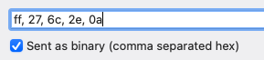
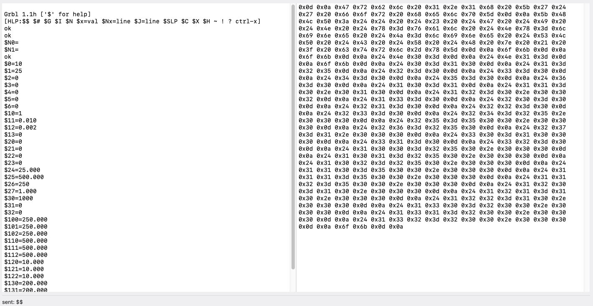
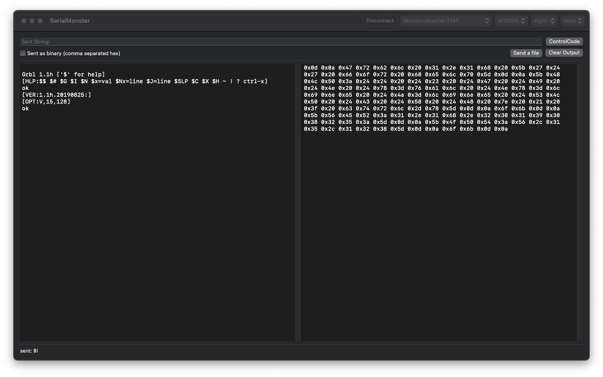
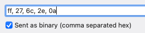
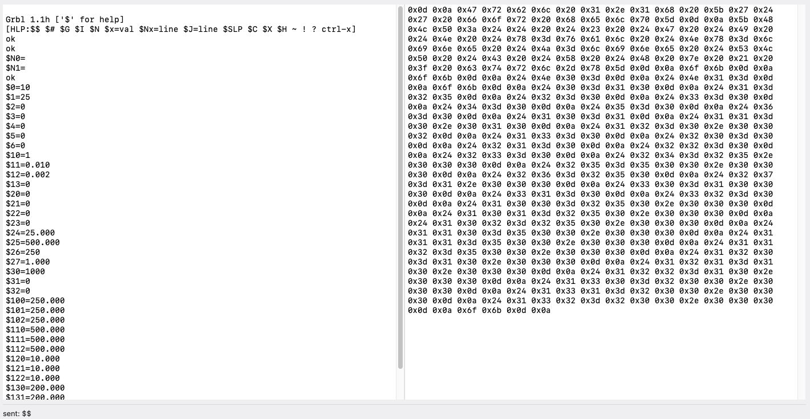

Connection configuration.
Sending text
Sending Control code

Sending binary (using comma separated hex string)

Sending file as a binary blob
Showing output from serial port as text and binary blob.

A simple serial port monitoring and interacting tool.
SerialMonster is a simple tool for interacting with serial port device. It can monitor the port, sending text or binary to serial port device.

Connection configuration.
Sending text
Sending Control code
Sending binary (using comma separated hex string)

Sending file as a binary blob
Showing output from serial port as text and binary blob.
